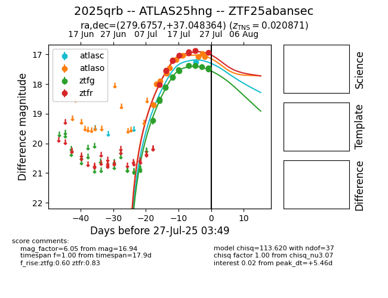

Target 2025qrb at 2025-07-27 03:49, see:
FINK: fink-portal.org/2025qrb
Lasair: lasair-ztf.lsst.ac.uk/objects/2025qrb
ALeRCE: alerce.online/object/2025qrb
TNS: wis-tns.org/object/2025qrb
YSE: ziggy.ucolick.org/yse/transient_detail/2025qrb
alt names
ZTF25abansec (ztf,fink)
2025qrb (tns,yse)
ATLAS25hng (atlas)
coordinates:
equatorial (ra, dec) = (279.6757,+37.04836)
galactic (l, b) = (65.8553,+18.31102)
photometry
last atlasc=17.26, atlaso=17.07, ztfg=17.46, ztfr=16.94
1 atlasc, 11 atlaso, 16 ztfg, 13 ztfr detections
